Rocío Jurado ha sido proclamada esta semana mama noel de la prensa del corazón , aunque sólo sea porque ella , su marido , José Ortega Cano , y sus hijos , José Fernando y Gloria Camila , componen la primera imagen navideña de su vida en común.
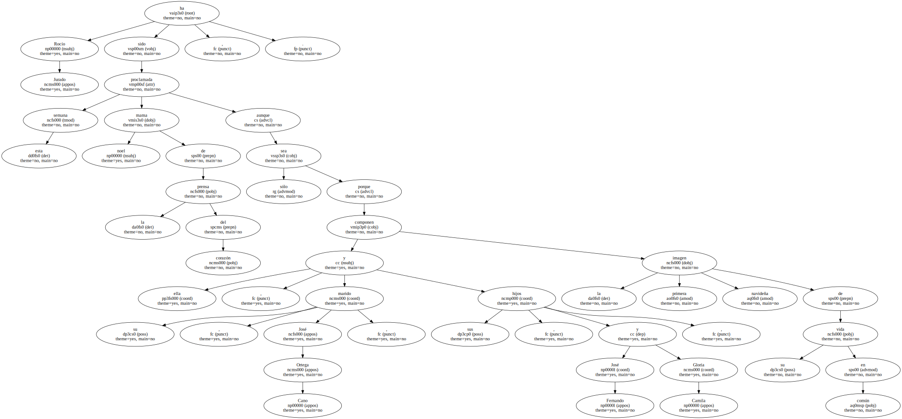Tienen accésit su ex marido , Pedro Carrasco , y su actual esposa , Raquel Mosquera , que se ganan su pequeño espacio en la portada de Diez Minutos gracias a que buscan un hijo adoptivo en Brasil.
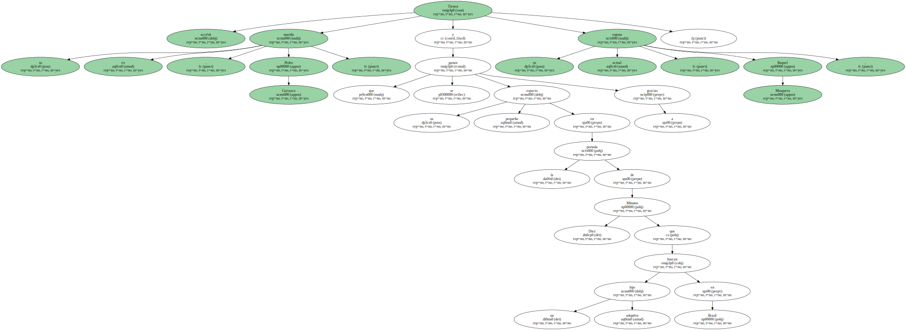Como es habitual , Raquel Mosquera despliega toda su humanidad por las calles de Río de Janeiro.
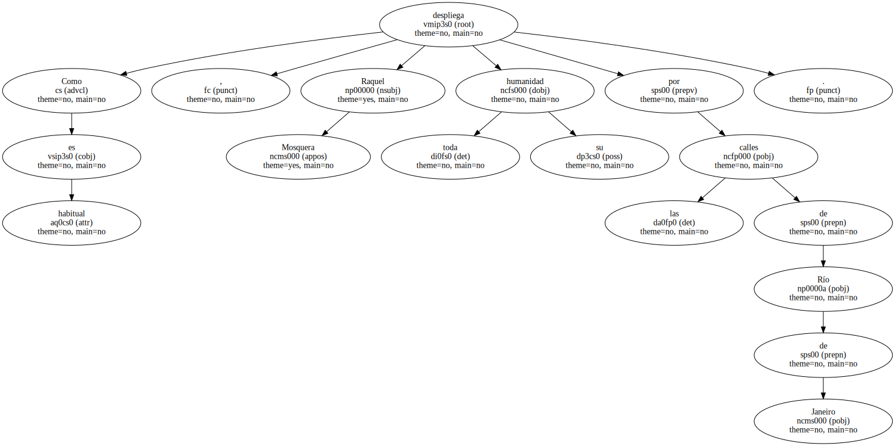¡Hola! saca en sus páginas a Jurado y Ortega Cano con sus dos hijos adoptivos.
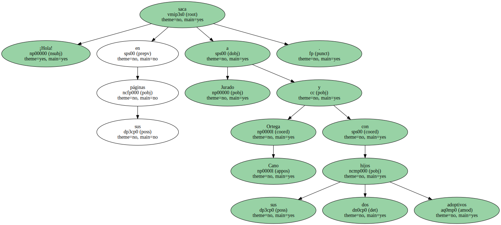Padres e hijos aparecen conjuntados en blanco y negro , vestidos para la fiesta navideña.
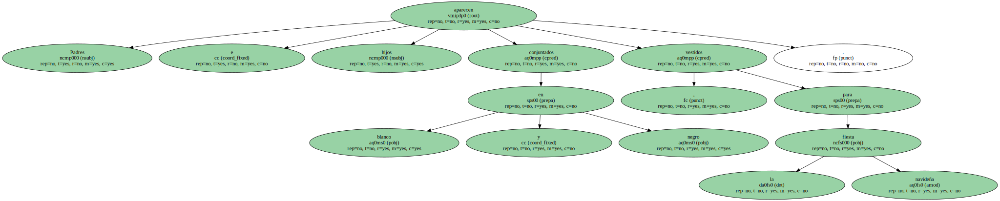Los niños , que en menos de un mes han pasado de un orfanato de Colombia a La Moraleja , parecen contentos ante el mantel bordado y la vajilla y cristalería ribeteada de pan de oro.
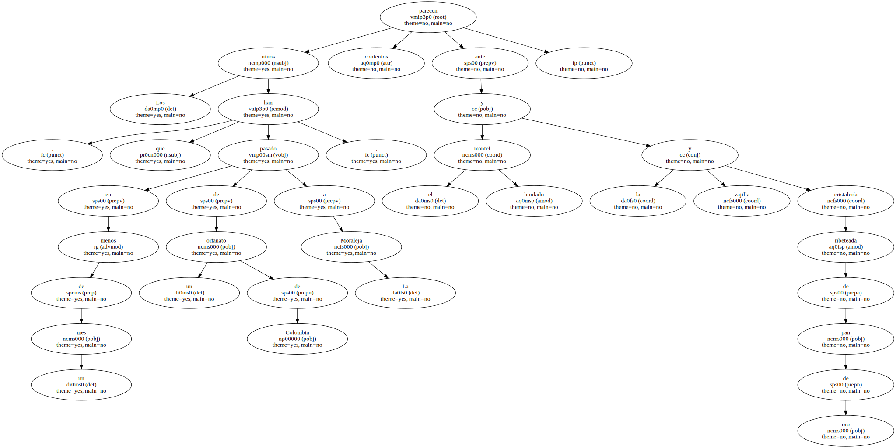Rocío Jurado , además , estrena nueva imagen , tal como explica en Lecturas.
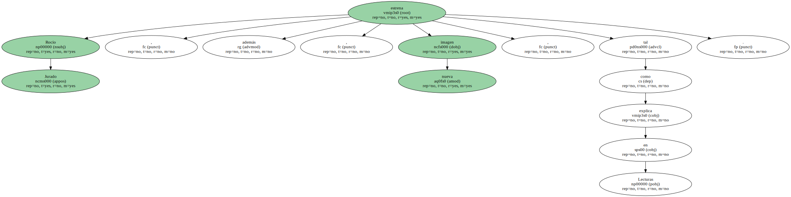Aunque no lo dice , la maternidad también la ha rejuvenecido de modo natural o adoptivo.
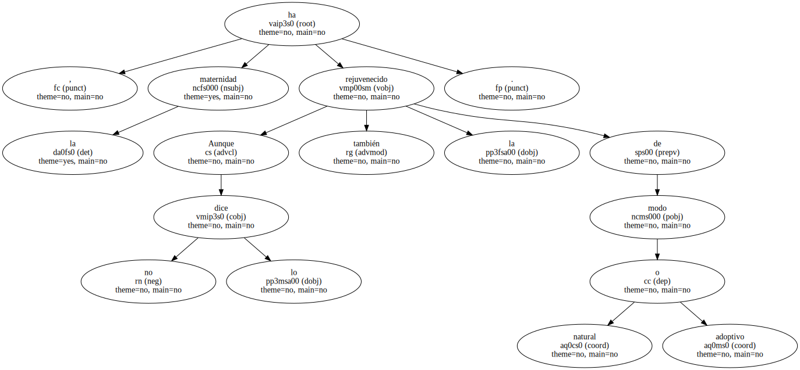Una hija para La Bombi.
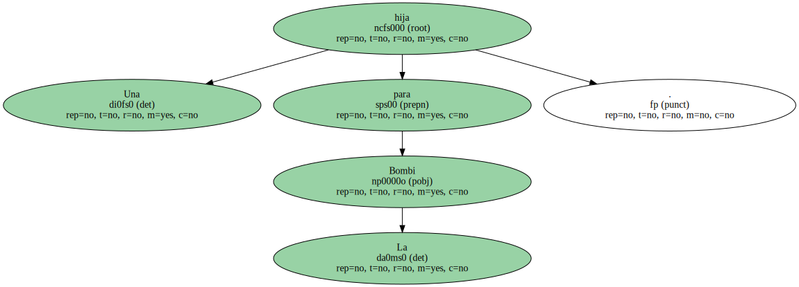Hay que reconocer , sin embargo , que el ejemplo de los famosos adoptando hijos ha creado escuela , algo de lo que se beneficiarán algunos niños que andan en busca de padres , aunque sean de los que no salen en las revistas.
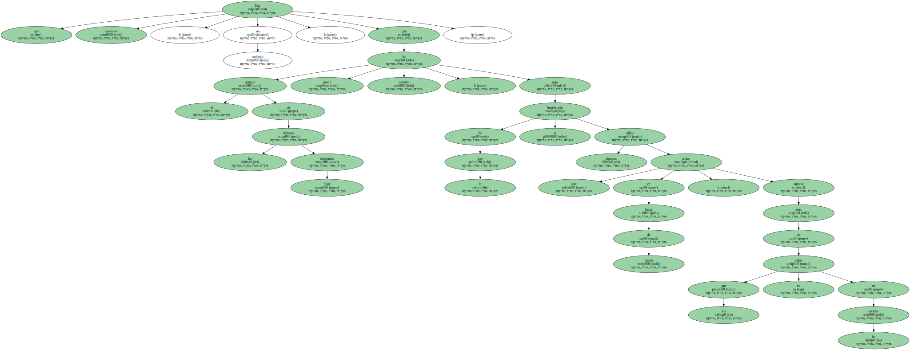¡Hola! nos muestra a Fedra Lorente , alias La Bombi , con su Alejandra , la niña colombiana que ha adoptado junto a su esposo , Miguel Morales ( hermano de Junior ) , mientras Isabel Pantoja reconoce que la pequeña Isabel ha cambiado su vida.
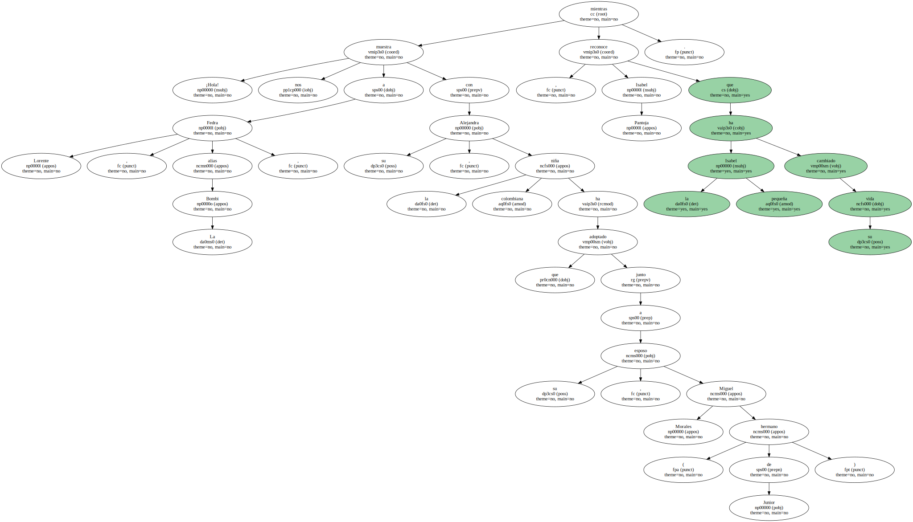También aparece , esta vez en Lecturas , la veterana - - en lides adoptivas - - Sara Montiel , quien muestra orgullosa a sus Thais y Zeus , dos niños que se llevó a casa hace 20 y 16 años , respectivamente.
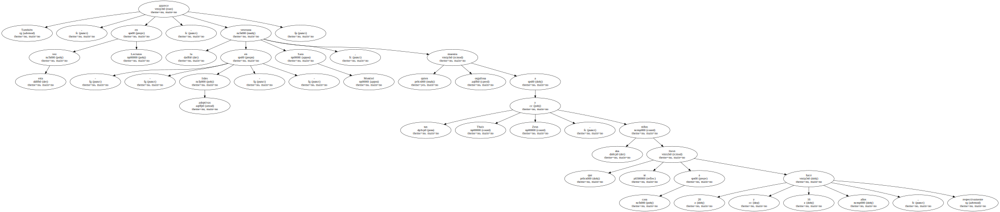En Diez Minutos es Manolo Escobar quien recuerda que , hace 22 años , se convirtió en padre de Vanessa , a quien dio un hogar y una canción.

Isabel Preysler no necesita adoptar hijos , porque con tanto marido ha acumulado cinco a lo largo de su vida.
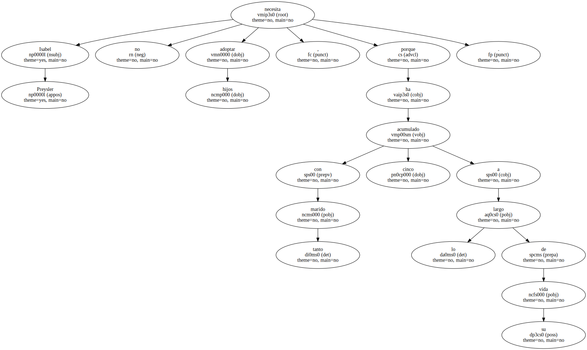Tampoco tiene problemas a la hora de poner a la menor , Ana Boyer , de niña anuncio , al posar con ella en su tradicional reportaje de Navidad para la marca de azulejos que representa.
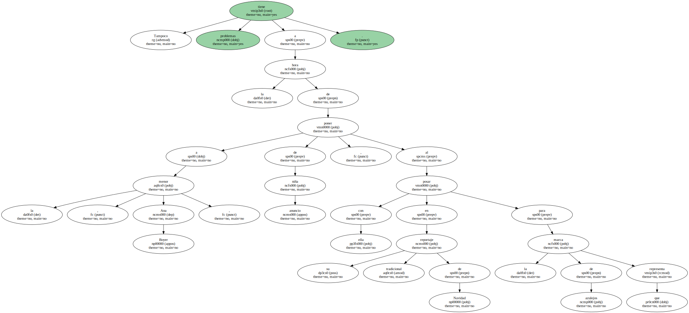El juego de la semana consiste en encontrar las siete diferencias entre la boda de Cristina Tárrega con Mami Quevedo y Fernando Morientes con Victoria López.
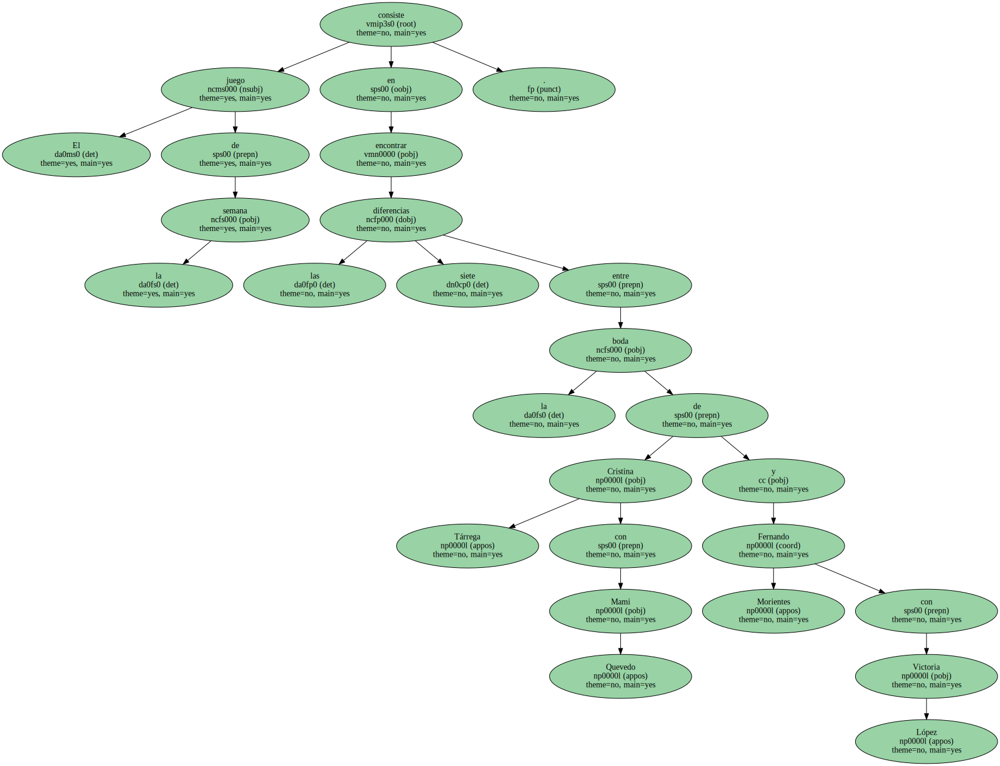Los trajes son tan parecidos que da que pensar en un encontronazo en el próximo partido que enfrente al Sevilla , donde juega el primer novio , con el Madrid , donde ejerce el segundo.
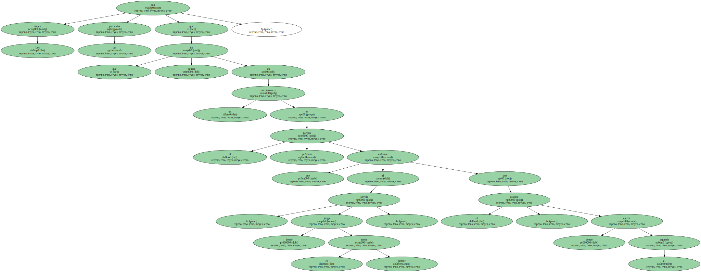Sus mujeres los van a aleccionar , sin duda.

Cristina , tan procaz ella en sus espacios televisivos , se casó cual Virgen de los Desamparados.
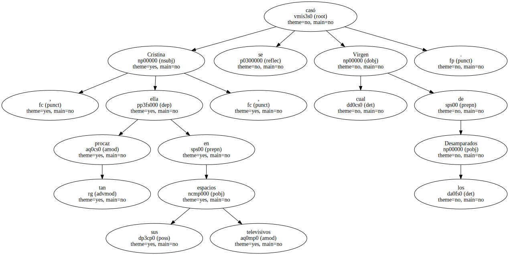Vivir para ver.
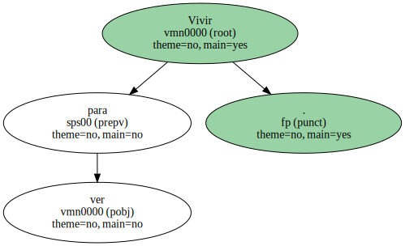